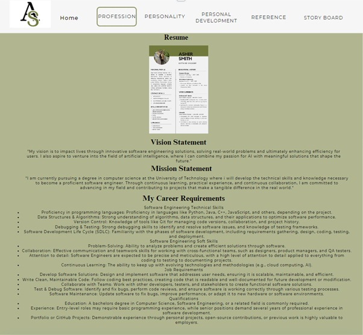
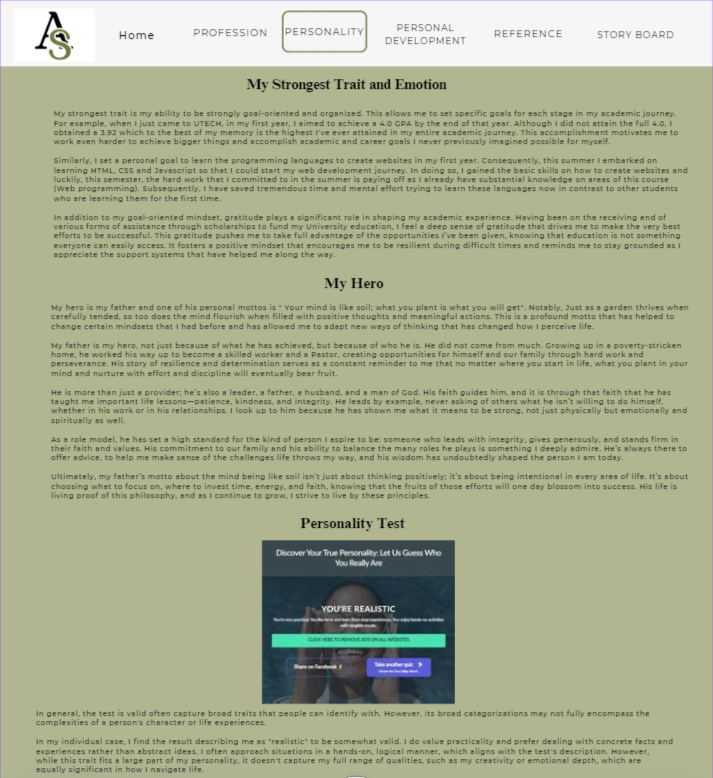
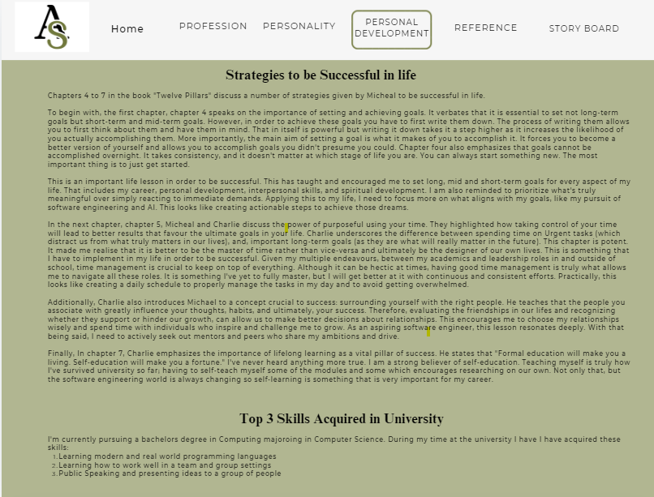
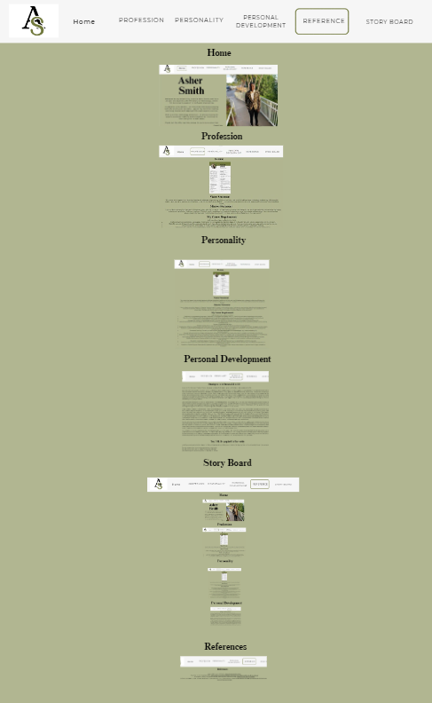
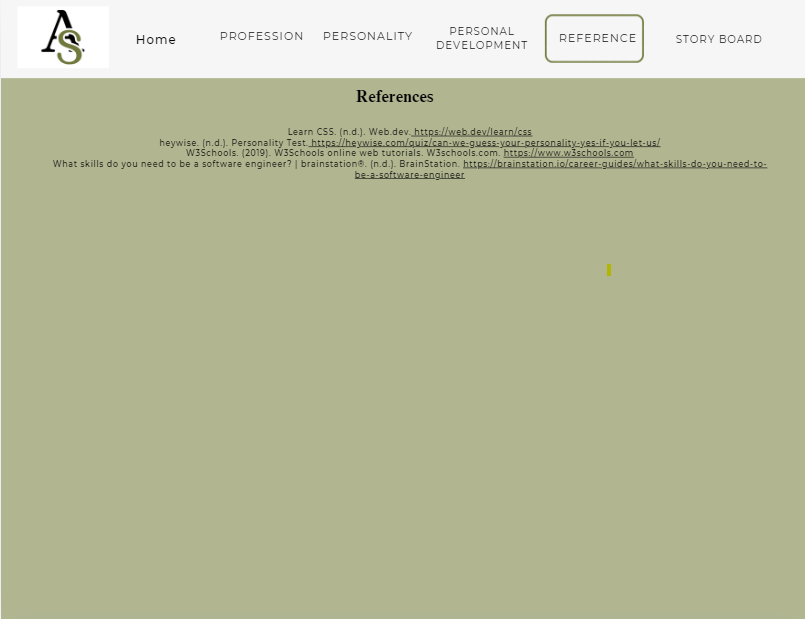

Index Page

Professional Page

Personality Page

Personal Development Page

Story Board Page

References Page

The Purpose of Each Webpage
- Background/Home - This serves to introduce the audience to my website and give them a brief synopsis of who I am.
- Profession - This page is dedicated to giving the audience a rundown of my professional endeavours, including my resume, which details my academic journey as well as the future prospects of my career journey. It also includes the skills and requirements of my future career: Software Engineering.
- Personality - This page aims to give the audience a glimpse into my personality. It showcases the results of a personality test as well as my strongest trait and emotion that allows me to do well in school. In addition, it gives a description of who my hero is and why.
- Personal Development - The purpose of this webpage is to share key life success strategies derived from the book *Twelve Pillars*, particularly from chapters 4 to 7. It also provides insight into skills I've acquired at university, linking these particularly to software engineering.
- StoryBoard - The purpose of the storyboard page is to depict an outline of how the website was conceptualized and created. It outlines the design of the site, including the theme, look and feel of the entire website, and the purpose of each webpage.
- References - This page contains a list of all the references that were used in creating the website and the overall project. This aims to boost the validity of the project and to give credit to the sources that helped in the creation process.
Theme of the Website
The theme of the website exhibits a modern and minimalistic design. Green and white is the overall colour palette which delivers a formal setting and suggests professionalism while still giving a personal touch as green is one of my favourite colours. The use of green brings a sense of balance and calmness. White, on the other hand,
enhances the minimalistic approach by offering a sense of openness making the content stand out in a formal and organized way.
List of Features Used on This Website
- Images
- links
- Lists- unordered and ordered
- Paragraph
- Headings
- Division